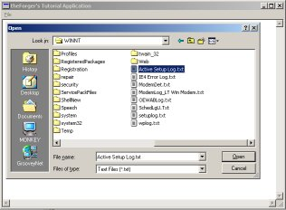

Example: app_two
The first step to opening or saving files is finding out the filename to use... of course you could always hard code the name of the file into your program, but honestly that doesn't make for very useful programs most of the time.
Since this is such a common task, there are predefined system dialogs that you can use to
allow the user to select a file name. The most common open and save file dialogs are accessed
through GetOpenFileName() and GetSaveFileName() respectively, both
of which take an OPENFILENAME struct.
OPENFILENAME ofn;
char szFileName[MAX_PATH] = "";
ZeroMemory(&ofn, sizeof(ofn));
ofn.lStructSize = sizeof(ofn); // SEE NOTE BELOW
ofn.hwndOwner = hwnd;
ofn.lpstrFilter = "Text Files (*.txt)\0*.txt\0All Files (*.*)\0*.*\0";
ofn.lpstrFile = szFileName;
ofn.nMaxFile = MAX_PATH;
ofn.Flags = OFN_EXPLORER | OFN_FILEMUSTEXIST | OFN_HIDEREADONLY;
ofn.lpstrDefExt = "txt";
if(GetOpenFileName(&ofn))
{
// Do something usefull with the filename stored in szFileName
}
Note that we call ZeroMemory() on the struct in order to initialise it to 0.
This is generally a wise practice, as some APIs are very picky about members that you don't use being set to
NULL. This way you don't need to explicitely set each member that you don't use.
You can easily find out the meanings of the various members by looking them up in your documentation. The
lpstrFilter value points to a double-NULL terminated string, and you can see from the example
that there are several "\0" throughout it, including one at the end... the compiler will add
the second one at the end as it always does with string constants (that's what you generally don't need to put them in
yourself). The NULLs in this string break it up into filters, each one is two parts. The first filter
has the description "Text Files (*.txt)", the wildcard isn't required here I just put it in because
I felt like it. The next part is the actual wildcard for the first filter, "*.txt". We do the same
thing with the second filter except that this is a generic filter for all files. You can add as many different filters
as you'd like.
The lpstrFile points to the buffer we have allocated to store the name of the file, since filenames can't
be larger than MAX_PATH this is the value that I've chosen for the buffer size.
The flags indicate that the dialog should only allow the user to enter filenames that already exist (since we want to open
them, not create them) and to hide the option to open the file in readonly mode, which we aren't going to support. Finally
we provide a default extention, so if the user types in "foo" and the file is not found, it will try to open
"foo.txt" before finally giving up.
To select a file for saving instead of opening, the code is nearly the same, except for calling GetSaveFileName()
we need only change the flags member to options more suitable for saving.
ofn.Flags = OFN_EXPLORER | OFN_PATHMUSTEXIST | OFN_HIDEREADONLY | OFN_OVERWRITEPROMPT;
In this case we no longer want to require the file exist, but we do want the directory to exist since we aren't going to try and create it first. We'll also prompt the user if they select an existing file to make sure they want to overwrite it.
NOTE: MSDN States the following for the lStructSize member:
Windows NT 4.0: In an application that is compiled with WINVER and _WIN32_WINNT >= 0x0500, use OPENFILENAME_SIZE_VERSION_400 for this member.
Windows 2000/XP: Use sizeof (OPENFILENAME) for this parameter.
Basically what this means is that as of Windows 2000 they added some members to this struct, and so it's
size changed. If the code above doesn't work for you it's possibly because the size that your compiler used
and the size that your operating system (ie. Windows 98, Windows NT4) expected were different and so the
call failed. If this happens, try using OPENFILENAME_SIZE_VERSION_400 instead of sizeof(ofn).
Thanks to people that pointed this out to me.
In windows you have a few options as to how you want to access files. You
can use the old io.h open()/read()/write(),
you can use stdio.h fopen()/fread()/fwrite(),
and if you are in C++ use can use iostreams.
However in windows all of these method ultimately call the Win32 API functions, which are what I will use here. If you are already comfortable using file IO with another method it should be fairly easy to pick up, or if you want simply use your method of choice to access files.
To open files, you can use OpenFile() or CreateFile().
MS recommends using only CreateFile() as OpenFile() is now "obsolete".
CreateFile() is a much more versatile function and provides a great deal of control
over the way you open files.
Say for example you have allowed the user to select a file using GetOpenFileName()...
BOOL LoadTextFileToEdit(HWND hEdit, LPCTSTR pszFileName)
{
HANDLE hFile;
BOOL bSuccess = FALSE;
hFile = CreateFile(pszFileName, GENERIC_READ, FILE_SHARE_READ, NULL,
OPEN_EXISTING, 0, NULL);
if(hFile != INVALID_HANDLE_VALUE)
{
DWORD dwFileSize;
dwFileSize = GetFileSize(hFile, NULL);
if(dwFileSize != 0xFFFFFFFF)
{
LPSTR pszFileText;
pszFileText = GlobalAlloc(GPTR, dwFileSize + 1);
if(pszFileText != NULL)
{
DWORD dwRead;
if(ReadFile(hFile, pszFileText, dwFileSize, &dwRead, NULL))
{
pszFileText[dwFileSize] = 0; // Add null terminator
if(SetWindowText(hEdit, pszFileText))
bSuccess = TRUE; // It worked!
}
GlobalFree(pszFileText);
}
}
CloseHandle(hFile);
}
return bSuccess;
}
There is a complete function to read a text file into an edit control. It takes as paramters the handle to the edit control and the name of the file to read in. This perticular function has a fair bit of error checking, file IO is one place where a lot of things can go wrong, and so you need to be on the lookout for errors.
Note the variable dwRead. We don't use it except as a paramter in ReadFile().
This parameter MUST be provided, the call will fail without it.
In the call to CreateFile() GENERIC_READ means we only want read access.
FILE_SHARE_READ means it's okay if other programs open the file at the
same time we do, but ONLY if they want to read as well, we don't want them
writing to the file while we are reading it. And OPEN_EXISTING means only
open the file if it already exists, don't create it, and don't overwrite it.
Once we've opened the file and chacked to see that CreateFile() succeeded, we check the
size of the file so we'll know how much memory we need to allocate in order to read the entire thing.
We then allocate the memory, check to make sure the allocation succeeded, and then call ReadFile()
to load the contents from disk into our memory buffer. The API file functions have no concept of Text Files
so they won't do things like read a single line of text, or add NULL terminators to the end of our strings. This
is why we've allocated an extra byte and after we read in the file we add the NULL ourselves so that we can
then pass the memory buffer as a string to SetWindowText().
Once all that has succeeded we set out success variable to TRUE, and clean up as we reach the end of the function,
freeing the memory buffer and closing the file handle before finally returning to the caller.
BOOL SaveTextFileFromEdit(HWND hEdit, LPCTSTR pszFileName)
{
HANDLE hFile;
BOOL bSuccess = FALSE;
hFile = CreateFile(pszFileName, GENERIC_WRITE, 0, NULL,
CREATE_ALWAYS, FILE_ATTRIBUTE_NORMAL, NULL);
if(hFile != INVALID_HANDLE_VALUE)
{
DWORD dwTextLength;
dwTextLength = GetWindowTextLength(hEdit);
// No need to bother if there's no text.
if(dwTextLength > 0)
{
LPSTR pszText;
DWORD dwBufferSize = dwTextLength + 1;
pszText = GlobalAlloc(GPTR, dwBufferSize);
if(pszText != NULL)
{
if(GetWindowText(hEdit, pszText, dwBufferSize))
{
DWORD dwWritten;
if(WriteFile(hFile, pszText, dwTextLength, &dwWritten, NULL))
bSuccess = TRUE;
}
GlobalFree(pszText);
}
}
CloseHandle(hFile);
}
return bSuccess;
}
Very similar to reading files, the function to write files has a few changes. First of all
when we call CreateFile() we specify that we want Read access, that the file
should always be created new (and if it exists it will be erased as it's opened) and that
if it doesn't exist, it will be created with the normal file attributes.
Next we get the length of the memory buffer needed from the edit control, since this is the source
of the data. Once we've allocated the memory, we request the string from the edit control
using GetWindowText() and then write it to the file with WriteFile().
Again, like with ReadFile() the parameter that returns how much was actually written
is required, even though we don't use it.